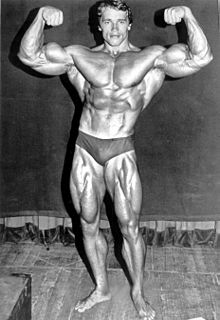

Bodybuilding is the use of progressive resistance exercise to control and develop one's muscles (muscle building) by muscle hypertrophy for aesthetic purposes.[1] It is distinct from similar activities such as powerlifting because it focuses on physical appearance instead of strength.[2] An individual who engages in this activity is referred to as a bodybuilder. In professional bodybuilding, competitors appear in lineups and perform specified poses (and later individual posing routines) for a panel of judges who rank them based on symmetry, muscularity, size, conditioning, posing, and stage presentation. Bodybuilders prepare for competitions through the elimination of nonessential body fat, enhanced at the last stage by a combination of extracellular dehydration and carbo-loading, to achieve maximum muscular definition and vascularity; they also tan and shave to accentuate the contrast of their skin under the spotlights.[3] A bodybuilder performs the incline dumbbell press. Body building takes a great amount of effort and time to reach the desired results. A bodybuilder might first be able to gain 8–20 pounds (4–9 kg) a year, if he or she lifts for seven hours on a weekly basis. However, gains begin to slow down after the first two years to about 5–15 pounds (2–7 kg). After five years, gains can decrease to just 3–10 pounds (1–5 kg).[4] Some bodybuilders use anabolic steroids and other performance-enhancing drugs to build muscles and recover from injuries more quickly, but competitions sometimes ban using them because of the health risks or considerations regarding fair competition. Despite some calls for testing for steroids, the leading bodybuilding federation (National Physique Committee) does not require testing.[5] The winner of the annual IFBB Mr. Olympia contest is generally recognized as the world's top male professional bodybuilder. Since 1950, the NABBA Universe Championships have been considered the top amateur bodybuilding contests, with notable winners such as Reg Park, Lee Priest, Steve Reeves, and Arnold Schwarzenegger. 